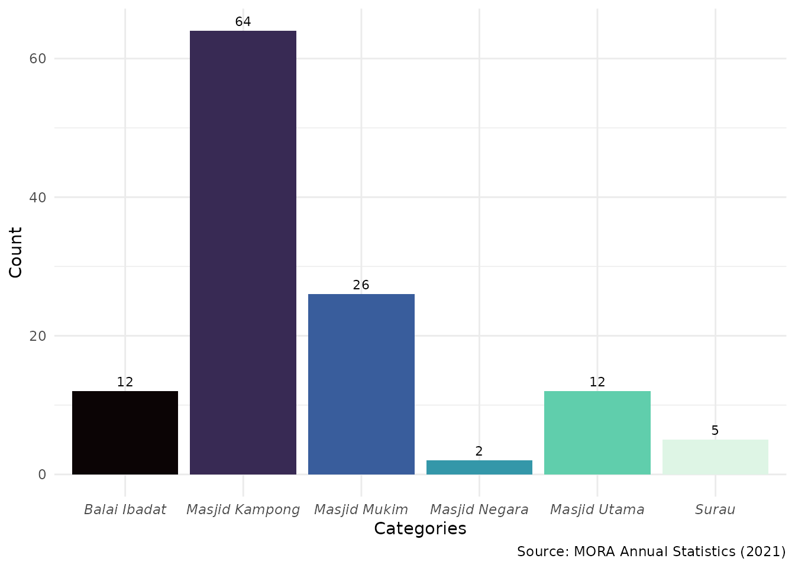

This vignette introduces the masjid dataset included in
the bruneimap package, which provides spatial data for
masjids (mosques) across Brunei. The dataset includes essential
information such as the name, geographic coordinates (latitude and
longitude), and district of each masjid.
library(tidyverse)
#> Error in get(paste0(generic, ".", class), envir = get_method_env()) :
#> object 'type_sum.accel' not found
#> ── Attaching core tidyverse packages ──────────────────────── tidyverse 2.0.0 ──
#> ✔ dplyr 1.1.4 ✔ readr 2.1.5
#> ✔ forcats 1.0.0 ✔ stringr 1.5.1
#> ✔ ggplot2 3.5.1 ✔ tibble 3.2.1
#> ✔ lubridate 1.9.4 ✔ tidyr 1.3.1
#> ✔ purrr 1.0.2
#> ── Conflicts ────────────────────────────────────────── tidyverse_conflicts() ──
#> ✖ dplyr::filter() masks stats::filter()
#> ✖ dplyr::lag() masks stats::lag()
#> ℹ Use the conflicted package (<http://conflicted.r-lib.org/>) to force all conflicts to become errors
library(bruneimap)
#> Loading required package: sf
#> Linking to GEOS 3.10.2, GDAL 3.4.1, PROJ 8.2.1; sf_use_s2() is TRUE
library(sf)
glimpse(masjid)
#> Rows: 100
#> Columns: 4
#> $ name <chr> "Balai Ibadat Kampong Mata-Mata", "Balai Ibadat Kampong Pera…
#> $ latitude <dbl> 114.8957, 114.9425, 114.9468, 114.9392, 114.9469, 114.9218, …
#> $ longitude <dbl> 4.900171, 4.881970, 4.881731, 4.880990, 4.878078, 4.897942, …
#> $ district <chr> "Brunei Muara", "Brunei Muara", "Brunei Muara", "Brunei Muar…We can visualise the locations of masjids across Brunei Below is an example where the masjids are overlaid on Brunei’s kampong boundaries:
ggplot() +
geom_sf(data = kpg_sf, fill = NA) +
geom_point(data = masjid, aes(latitude, longitude), inherit.aes = FALSE) +
theme_bw()
#> Warning: Removed 3 rows containing missing values or values outside the scale range
#> (`geom_point()`).